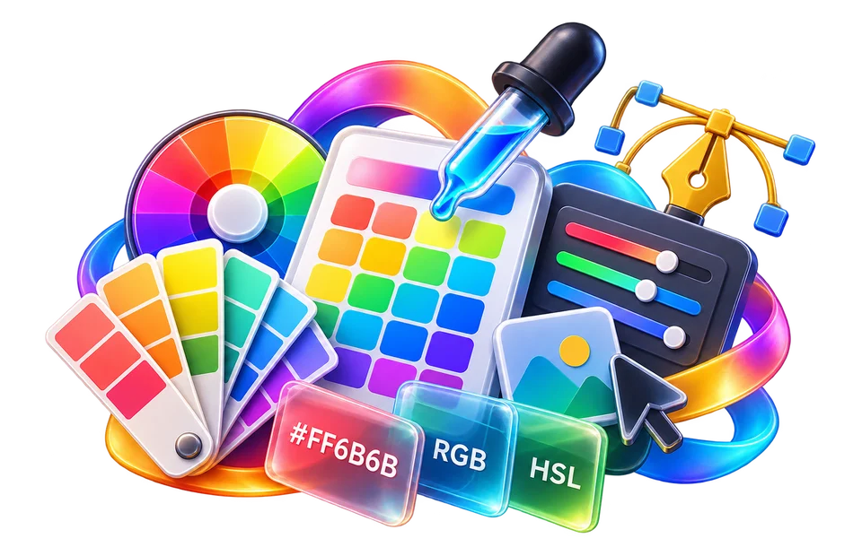

Choose a starting colour or palette
Compare a navy heading against a pale background, then test the same pair in dark mode.
Convert HEX/RGB, test contrast and build gradients with independently editable colors.
Fast, browser-first workflow. Your input stays on this device where supported.
A pleasant palette does not automatically guarantee readable text.

Compare a navy heading against a pale background, then test the same pair in dark mode.
Develop and compare a small colour palette.
Check text contrast on both light and dark backgrounds.
Compare a navy heading against a pale background, then test the same pair in dark mode.
A teal button with white text may appear attractive but still fail readability at small type sizes. Test normal, hover, disabled and dark-theme states before committing colours.
Use the real tool above to verify the result. The example illustrates the workflow, not a guaranteed outcome.
A teal button with white text may appear attractive but still fail readability at small type sizes. Test normal, hover, disabled and dark-theme states before committing colours.
Perceived colour can vary by display, surrounding surfaces and accessibility settings. Do not use colour alone to convey warnings.
A six-digit CSS HEX color records red, green and blue channel values in hexadecimal notation. #FF0000 is full red with zero green and blue, equivalent to rgb(255, 0, 0). #000000 represents black and #FFFFFF white. The code is a digital encoding of color channels, not a guarantee that two monitors or printers will reproduce the same physical color. When a design system stores a brand color, copy the exact code rather than selecting an approximate look from a screenshot or another monitor.
A common practical task is translating a website palette from HEX to RGB for CSS or another application. For #336699, the pairs 33, 66 and 99 correspond to decimal channel values 51, 102 and 153. Verify the converted numbers and whether the destination format uses an alpha channel. An eight-digit HEX code includes transparency in some CSS conventions, and the order of channels matters. A PNG image may also contain transparency even when a sampled pixel appears against a white checkerboard preview.
Text and background colors must have enough contrast to be readable. A pale grey label on white may look elegant but fail users with reduced vision or those viewing a screen in bright sunlight. For standard web text, WCAG commonly uses a contrast ratio threshold of 4.5:1 at AA; large text has a lower common threshold of 3:1. These numbers concern luminance contrast, not whether two hues are visually attractive. A contrast checker is a useful starting measurement, but actual font weight, size and interface states should also be reviewed.
Do not rely on color alone to communicate success, warning or error. A green status dot should be accompanied by a text label or icon because users with color-vision differences may not distinguish it from another state. Hover, focus and disabled colors can reduce contrast compared with a default button. In dark mode, a color that worked as a heading on white may need adjustment on a navy background. Audit the same actual text/background pairing used in the final component.
HSL describes hue, saturation and lightness, which can be convenient for exploring families of colors. A higher lightness is not always a higher perceived luminance because different hues contribute differently to brightness. If you create several shades from one hue, check them individually for text contrast rather than assuming equal HSL lightness means equal accessibility. Gradients may have different contrast at their ends, so test the worst background area behind text.
For a simple palette, assign roles such as main action, heading, body text, border and status rather than collecting attractive swatches without a purpose. Record codes for both light and dark appearances and include hover/focus states. A color tool can convert, preview or compare channels; it does not replace actual cross-device visual QA, print proofing or accessibility testing with real content.
A button with a pale grey label on a white background can be visually attractive yet difficult to read. Contrast depends on both foreground and background luminance, not just whether the colours have fashionable HEX values. Test the same palette on light and dark surfaces and check active, hover and disabled states separately. If the page offers RGB and HEX representations, remember that converting values does not measure how the colours will look on every display. A stored colour sample is a code, not a promise of colour accuracy in print. Include a text label alongside critical colour-only status indicators.
Test foreground and background readability. Test navy text on a pale background; a colour pair suited to large headings may fail for small text.
A colour pair may pass for large text but fail for small text.
Open Contrast mode →Build a multi-stop gradient and copy its CSS. Blend two accessible colours, copy the CSS and inspect the gradient behind actual interface text.
Test gradients on different screen sizes and behind actual content.
Open Gradient mode →Translate HEX colours into RGB for a stylesheet. HEX #FF0000 maps to RGB 255, 0, 0; test a transparent colour separately if alpha is needed.
HEX notation does not always imply transparency.
Open Hex Rgb mode →Dark and light backgrounds change perceived contrast, and a palette may behave differently in each.
Contrast depends on both foreground and background luminance, not on one isolated colour value.
Readability depends on the colour against its surrounding background and on the size or weight of the text.
Not reliably. Printing uses different colour spaces, profiles and materials; a digital preview is not a calibrated print proof.